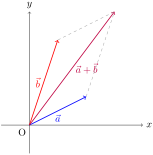

Vetores são objetos matemáticos que possuem tanto magnitude quanto direção. São usados amplamente em várias áreas da matemática, física, e engenharia para representar quantidades como força, velocidade e deslocamento.
Subseção1.1.1Definições
Um vetor é representado por uma flecha que aponta na direção desejada, onde o comprimento da flecha representa a magnitude do vetor.
Vetores podem ser denotados por coordenadas. Por exemplo, o vetor \(\vec{v} = (x, y)\) no plano cartesiano possui componentes \(x\) e \(y\text{,}\) que representam suas projeções nos eixos \(x\) e \(y\text{,}\) respectivamente.
Subseção1.1.2Operações com Vetores
Algumas operações básicas com vetores incluem:
Adição de Vetores: Dados dois vetores \(\vec{a} = (a_x, a_y)\) e \(\vec{b} = (b_x, b_y)\text{,}\) sua soma é dada por \(\vec{a} + \vec{b} = (a_x + b_x, a_y + b_y)\text{.}\)
Multiplicação por Escalar: Dado um vetor \(\vec{v} = (x, y)\) e um escalar \(k\text{,}\) o vetor escalado é \(k \cdot \vec{v} = (k \cdot x, k \cdot y)\text{.}\)
Produto Escalar: Dados dois vetores \(\vec{a} = (a_x, a_y)\) e \(\vec{b} = (b_x, b_y)\text{,}\) o produto escalar é \(\vec{a} \cdot \vec{b} = a_x \cdot b_x + a_y \cdot b_y\text{.}\)

Figura1.1.1.Representação de Vetores em Duas Dimensões
Adicionando um parágrafo de teste
Exemplo1.1.2.Exemplo de Operações com Vetores.
Considere os vetores \(\vec{a} = (2, 3)\) e \(\vec{b} = (1, 4)\text{.}\) Vamos realizar algumas operações básicas: